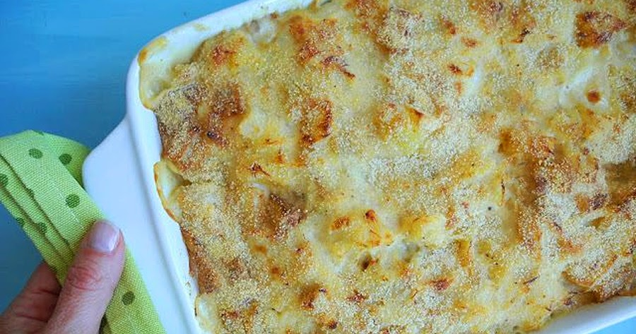

Portuguese "Bacalhau com Natas" / Cod with Cream

Description
"Bacalhau com natas" is a traditional Portuguese dish featuring salt cod, or bacalhau, which is a staple protein in Portuguese cuisine. It is combined with creamy potatoes, caramelized onions, and a rich béchamel sauce, making for a deeply satisfying and hearty dish that is perfect for any occasion.
Ingredients
- 600g Salt Cod Loins
- 500g Potatoes
- 2tbsp Extra Virgin Olive Oil
- 2 Garlic Cloves
- 2 Bay Leaves
- 2 Medium Onions
- 50g Butter
- 50g All-purpose Flour
- 500ml Full Fat Milk
- 200ml Fresh Cream
- 100g Grated Mozzarella Cheese
- 50g Olives
- Salt
- Black Pepper
- Fresh Parsley
Steps
- Place a medium size pot over medium to high heat, add the fish loins in and a bay leaf, cover with boiling water or milk, simmer for 5 minutes. Remove the cooked fish from the liquid, set aside. If you use milk, set aside 500 ml of it for the bechamel.
- Peel and dice the potatoes, air fry or deep fry them until they are soft, and a golden crust has formed on the outside. Allow the fry potatoes to rest on top of absorbent paper.
- Once the codfish has cooled off a little, remove the skin and bones, then break the fish into smaller chunks, set aside.
- Pre heat the oven to 200°C.
- In the meantime, thinly slice the onions, then place a deep skillet over low to medium heat. Once hot, add in the olive oil with the peeled whole garlic cloves. Cook for 2 minutes. Add in the sliced onions and the remaining bay leaf, sauté for another 2 to 3 minutes until soft and translucent. Discard the garlic cloves.
- Add in the codfish, cook for another 3 minutes, stirring gently. Turn off the heat, set aside.
- For the bechamel, place a small pan over low to medium heat, add in the butter and flour. Cook until the flour is light golden, and the mixture is bubbly. Pour the milk in little by little, stirring well with a whisk between additions to make sure it's not sticking to the bottom of the pan. Once the sauce thickens, remove from the heat, stir in the fresh cream, season with a little nutmeg, black pepper, and a pinch of salt.
- Transfer the potatoes to the codfish skillet, add in some fresh chopped parsley, mix well, cover with the bechamel sauce. Add more salt and pepper if necessary.
- Sprinkle the grated cheese on top, decorate with the olives, bake until golden brown. Serve with a sprinkle of chopped fresh parsley, enjoy!
Home